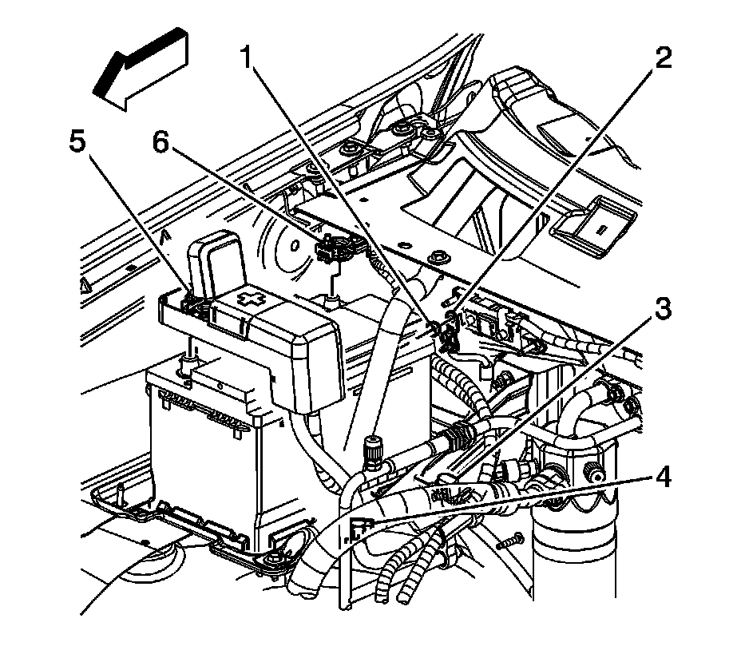
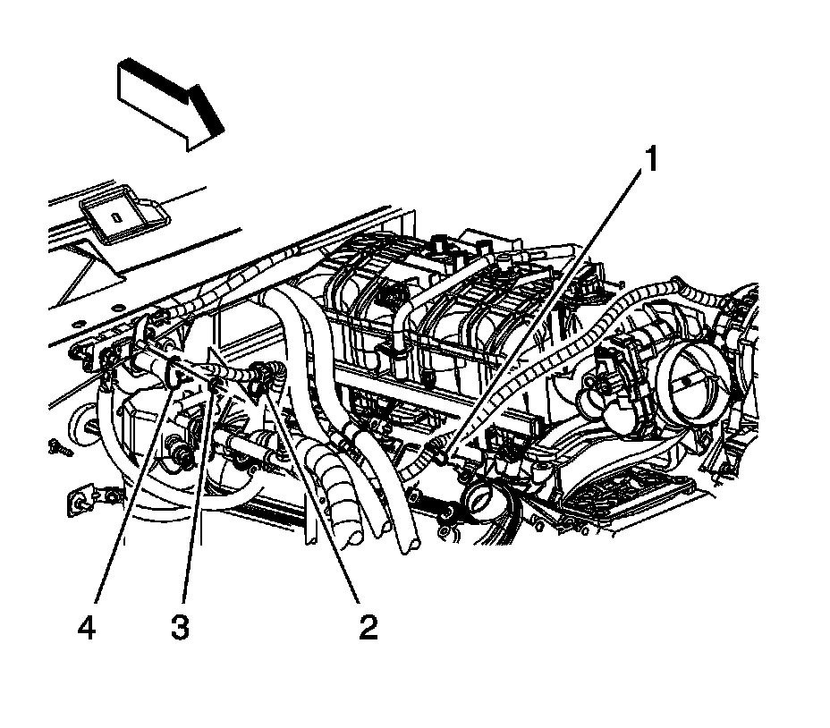
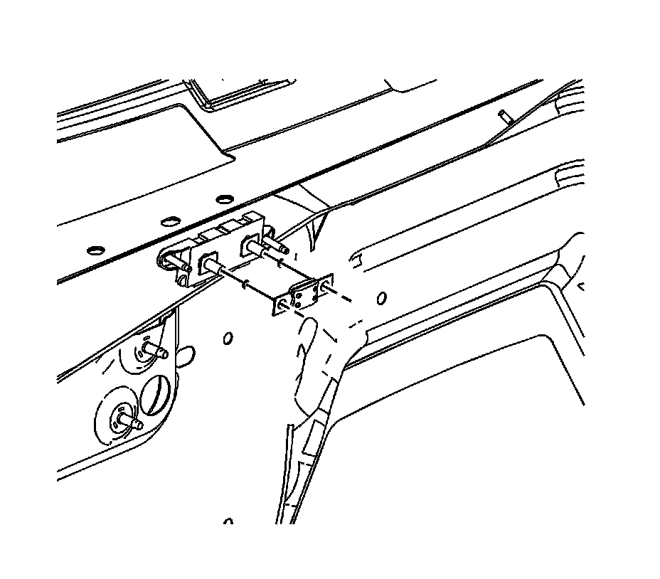

Battery Positive Cable Fuse Replacement
BATTERY POSITIVE CABLE FUSE REPLACEMENT
REMOVAL PROCEDURE

1. Disconnect the negative battery cable.
2. Remove the fuse cover.

3. Remove the starter solenoid cable nut (1) from the fuse stud.
4. Remove the starter solenoid cable terminal (2) from the fuse stud.

5. Remove the generator battery jumper cable to fuse nut (3).
6. Remove the generator battery jumper cable terminal (4) from the fuse stud.
7. Remove the positive battery cable terminal from the fuse stud.

8. Remove the fuse from the holder.
INSTALLATION PROCEDURE
1. Install the fuse to the holder.
2. Install the positive battery cable terminal to the fuse stud.
3. Install the generator battery jumper cable terminal (4) to the fuse stud.
4. Install the generator battery jumper cable to fuse nut (3).
NOTE: Refer to Fastener Notice.
Tighten the nut to 9 N.m (80 lb in).
5. Install the starter solenoid cable terminal (2) to the fuse stud.
6. Install the starter solenoid cable nut (1) to the fuse stud.
Tighten the nut to 9 N.m (80 lb in).
7. Install the fuse cover.
8. Connect the negative battery cable.